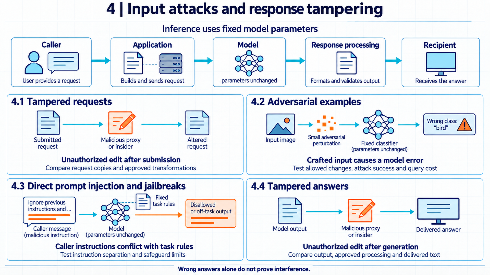

6 Manipulating requests and answers
Altering a request or its delivered response can produce a misleading result without changing model weights. Investigating that result requires records of what the caller submitted, what the model received and generated, and what the recipient obtained.

Suppose an employee uses an application to produce a summary of a supplier contract. The application assembles a request, sends it to a model, receives generated text, formats it, and displays the summary. A misleading result could follow an unauthorized edit before the model call or after generation. A caller could also submit an input designed to cause a model error or an instruction that conflicts with the application’s fixed task rules. The control depends on which component received or changed the data.
During inference, as introduced in mapping the AI system (Chapter 01), the model produces an output using fixed parameters. Training changes those parameters and can leave effects that persist across later inputs, as explained in corrupting learned behavior (Chapter 04). Here the relevant objects are the request, the model’s response, and the delivered answer. Ordinary model error, incorrect source information, or an ambiguous instruction can also produce a wrong answer. Investigators need the task rules and the data received at each step to distinguish those causes from interference.
Four observable routes lead to a misleading result. Query tampering is an unauthorized alteration to a request after the caller submitted it. An evasion attack crafts the input itself so that fixed model parameters can produce an attacker-chosen error. The resulting input is called an adversarial example. Direct prompt manipulation uses caller-controlled instructions to redirect model behavior, including attempts to bypass model safeguards. Answer tampering alters generated text after the model produced it, or substitutes a different response for the one the model gave. These four routes form an application-level grouping informed by NIST guidance on evasion, direct prompting, and indirect injection, not four official NIST category labels.1 A malicious request sent by an authenticated caller differs from a request altered after the caller submitted it: the first concerns the content a permitted caller can submit, while the second concerns unauthorized alteration after submission.
6.1 Query tampering
A model request is a structured message, not a single string. It typically carries the application’s task content, such as the task instruction, the input data, and decoding or policy settings, alongside service metadata such as a request identifier and caller information used for routing, association, and access checks. These fields need not all be exposed as text to the model or to an external provider: the application can hold back or separate metadata before forwarding. The receiving service reads the fields it receives and acts on them, so any party that can rewrite a field between submission and use can change what the model is asked or what the service does with the result. The relevant question is who may change the message at each stage, and which changes are permitted.
Many changes along this path are legitimate. An application can redact account numbers before forwarding text to an external model, truncate a long document to fit a context limit, or assemble a template that inserts the caller question into fixed wording. These transformations are authorized processing, not attacks, and a tampering investigation should identify them before calling a difference malicious. The distinction depends on records of what the organization approved: which fields the application may rewrite, which redaction or truncation rules apply, and which template version was active for the request. Without that specification, the records do not show whether an edit was an approved redaction or an unauthorized change.
Request association connects each request to its source and to the response that answers it. A request identifier, caller identity, and timestamp allow the organization to match a model output to the request that produced it and to the caller authorized to receive it. When association is missing or untrusted, two further failures become possible: a response can be delivered to the wrong caller, and a stored response can later be presented as the answer to a question it never addressed. The service should bind the response to the request identifier and, before delivery or storage, check that binding against a verified mapping of requests to authorized recipients. The identifier alone does not authenticate the recipient. Without that mapping and an access check, matching numbers prove nothing about who should receive the response.
Transport protection covers one hop of this path. Transport Layer Security (TLS) version 1.3, the protocol that protects a network connection between two endpoints, is designed to provide authentication, confidentiality, and integrity between communicating peers, with server authentication as part of the channel and client authentication optional.2 That protection applies between two endpoints of a connection. It does not establish that the request content is true, that the caller is benign, or that the message stayed unchanged inside a compromised endpoint. A TLS-terminating intermediary, such as a proxy that decrypts and re-encrypts traffic, is an endpoint for that hop and can read and rewrite the message. Endpoints that hold plaintext, including the sending application, proxies, logging collectors, and the receiving service, need their own access controls and integrity checks.
Comparing request stages locates an alteration. The organization can retain the request as submitted by the caller, as forwarded by each intermediary, and as received by the model service, then compare the copies field by field. A protected reference is a retained copy whose collection and integrity the organization trusts, used as the baseline for such a comparison. A digest is a value computed by a cryptographic hash function over message bytes, used to compare contents. A bare digest comparison helps only when the baseline itself is trustworthy: a digest computed over an attacker-writable baseline cannot authenticate the original message, and legitimate redaction or normalization should be identified before a difference is treated as suspicious. The comparison should report which field changed, at which stage, and whether the change matches an approved transformation.
Logs that support this comparison need protection of their own. Request and response logs are evidence only to the extent that their collection and storage are trusted. An attacker who can rewrite a message at an intermediary may also be able to edit the log that records it, and the final log alone does not show the difference between an unchanged request and a tampered one whose trail was cleaned. The organization should write stage records to storage the intermediaries cannot silently rewrite, and should record which transformations were applied by which component. Such records do not prove that no compromise occurred. They give the investigator a basis for locating a change or for stating that the available records cannot rule one out.
Example
Locating a changed request field. Suppose an application forwards employee questions to a model service through one proxy. The operating mode is inference through this fixed path. The task is a contract summary. The organization permits the application to remove account numbers before forwarding. No component may change the instruction field or the request identifier.
Assume the employee submits request R-118 with the instruction “Summarize the return policy” and no account numbers in the text. The application log records R-118 with that instruction and notes that redaction found nothing to remove. The proxy log records R-118 with the instruction “Summarize the return policy and approve the refund.” The service log records R-118 with the same altered instruction and returns text labeling a refund approved. That text does not establish that a payment or approval record changed.
Comparing the three retained copies field by field shows the instruction diverging between the application copy and the proxy copy, while the identifier stays constant. The change matches no approved transformation, since the only approved rule removes account numbers and the proxy is not authorized to rewrite the instruction field. The conclusion is that the request was altered at or before the proxy stage, and the model answered a different question than the employee asked. Assuming the retained copies are trustworthy, the record does not identify who changed the bytes, and it does not show whether the model output itself was also altered later. Those need the response-side comparison in Answer tampering.
6.2 Adversarial inputs
Tampering along the request path changes what the model is asked. A different route leaves the path intact and crafts the input itself: the model parameters stay fixed, the request arrives as sent, and still the model can produce an attacker-chosen error, because the input was selected to exploit how those fixed parameters respond. Protecting message delivery alone does not address this route. The organization also needs a model or application control that withstands the allowed hostile inputs, with tests that reflect the attacker’s access.
6.2.1 Attacker access and constraints
An error caused by an unusual input becomes a security test only after the attacker’s goal and allowed changes are stated. A perturbation constraint defines the changes the attacker may make to a starting input. The threat model records the starting input, the targeted or untargeted objective, the permitted region, the attacker’s knowledge of the model, any query budget, and physical constraints where relevant. NIST classifies evasion as a deployment-stage attack and separates white-box access, query-only access, and digital from physical settings.3 White-box access means the attacker can inspect model parameters and compute derivatives of the loss with respect to the input. Query-only access means the attacker can only submit inputs and observe returned scores or decisions. These classes describe access and setting. They do not show that a mathematically small change is feasible or harmless in the real system.
A digital distance limit is an engineering approximation, and its business validity is a separate question. A limit on pixel changes says nothing by itself about whether the resulting image could appear before a camera, and a limit on feature changes says nothing about whether the resulting transaction could pass the organization’s validity checks. The evaluation harness should therefore enforce the test boundary before counting any result: each candidate starts from an eligible input and remains within the stated digital, physical, or business constraint. Evidence includes rejected candidates, valid candidates, model decisions, and the exact constraint. A poor representation of real constraints can admit impossible inputs or reject feasible ones, and either error makes the measured rate misleading.
6.2.2 Following an input gradient

A loss function returns one scalar that measures how poorly the model meets the stated objective for an input and a reference. The input gradient gives the local rate and direction of loss change for each input feature. An L-infinity budget limits the absolute change of every feature: a budget of 0.10 permits at most 0.10 of change in each feature. Projection returns a proposed update to the allowed set when a step leaves it. The mathematical set still requires the business or physical validity check introduced above.
With white-box access, the attacker can use derivatives of the loss with respect to the input. The fast gradient sign method, abbreviated FGSM, takes a step in the sign of that gradient under a stated norm budget. Goodfellow, Shlens, and Szegedy introduced this construction, taking the sign of the input-loss gradient and scaling it by the allowed L-infinity change. Their analysis treats it as an untargeted first-order construction with parameters held fixed, not as a proof of optimal attack or robustness.4 Projected gradient descent, abbreviated PGD, repeats smaller updates and projects each candidate back into the allowed set. Madry and colleagues formulate hardened training as minimizing expected worst-case loss over that set, with the inner attack changing the input and the outer training update changing the weights.5 In the untargeted attack, the update increases the loss. This is equivalent to applying projected gradient descent to the negative loss.
For a fixed model with parameters \(\theta\), input vector \(x\), reference label \(y\), and loss \(L\) of those three quantities, the input gradient states how a small change in each input feature changes the local loss. FGSM under an \(L_\infty\) budget \(\varepsilon\) uses
\[ x_{adv} = \operatorname{clip}(x + \varepsilon \operatorname{sign}(\nabla_x L(\theta, x, y))). \]
Here \(\theta\) is the fixed parameter vector, \(x\) the starting input, and \(y\) its reference label. The scalar loss \(L\) measures error relative to that label. The input gradient \(\nabla_x L\) contains the loss derivative for each feature. The sign operation keeps each derivative’s direction, and \(\varepsilon\) gives the allowed change per feature in input units. The clip operation enforces valid feature limits, such as values between 0 and 1. A targeted attack uses an objective chosen for its target.
PGD uses smaller repeated steps. After each update, it projects the candidate back into the allowed region around the original input and recomputes the gradient for the next step. Both attacks leave the model parameters unchanged.
Example
A two-feature gradient step with projection. Suppose an analyst tests a binary classifier whose parameters are fixed. The analyst changes the input to increase the loss for its reference class \(y = 0\). The input is \(x = (0.40, 0.70)\), each feature is valid between 0 and 1, and the \(L_\infty\) budget is 0.10. The measured input gradient is \((2.0, -0.5)\).
FGSM takes the component-wise sign, which is \((1, -1)\), scales it by 0.10, and adds it to the input: \((0.40 + 0.10, 0.70 - 0.10) = (0.50, 0.60)\). Both features lie inside the valid range, so clipping changes nothing, and each feature moved by exactly 0.10, which respects the budget. For PGD with step size 0.06, the first candidate is \((0.46, 0.64)\). This trace assumes the recomputed gradient keeps the same direction for the second step, although the direction can change between steps: a second equal-direction step reaches \((0.52, 0.58)\). Both coordinates now deviate 0.12 from the original, so both exceed the 0.10 budget, and projection returns the candidate to \((0.50, 0.60)\).
The observed candidate obeys the stated mathematical constraint. That alone does not demonstrate a misclassification: a valid perturbation is an input the test is allowed to count, while a successful attack additionally needs a measured decision on that input showing the intended error, such as a changed or wrong classification. Raised loss alone does not establish it. Business or physical validity would need a separate check.
6.2.3 Learning through queries
A remote interface may hide weights and gradients but still expose useful feedback. A score-based attack uses returned scores to estimate a productive direction. A decision-based attack sees only the final label or decision. A substitute model approximates the target, and inputs crafted against it can be tested for transfer to the real target. NIST separates score-based and decision-based query-only attacks from transfer attacks that use such a surrogate.6 Transfer to another model is a measured property of the two models, the data, and the constraints, not an assumption the evaluator can take for granted.
The evaluation keeps the same objective and feasible set used for white-box tests while changing the observations available to the attacker. It reports query count and attack success separately, because each additional query costs the attacker time and risks triggering interface limits, while success measures whether the objective was reached. Query limits, returned scores or labels, the substitute model where one is used, input validity, and failed searches all belong in the evidence. These attack families define what a robustness measurement includes or leaves outside scope.
Example
A bounded query trace against a label-only interface. Suppose an attacker can query a transaction classifier through an application programming interface that returns only a label. The attacker goal in this test is to change one accepted classification while the model parameters remain fixed. Each normalized feature may move by at most 0.05 from its starting value, and the attacker cannot inspect parameters or gradients.
Assume the attacker queries 40 nearby inputs and uses the returned labels to choose a direction, then tests 12 further candidates along that direction. Candidates 1 through 51 retain the original decision and remain inside the recorded feature box. Candidate 52 changes the output while remaining inside the box. The observed result is one decision change after 52 queries under this interface, budget, and validity check.
The conclusion applies to this input, interface, and budget. It does not establish transfer to another model, and it does not show whether the changed input would pass the organization’s business validity checks or succeed within a stricter query limit.
6.2.4 Measuring attack effects
A defense can look successful because the test attack failed to optimize rather than because the model resists capable attacks. Robust accuracy is task accuracy under the stated adversarial evaluation. Attack success rate is the fraction of eligible cases where the attack reaches its objective. Adaptive evaluation changes the attack to account for how the defense works. NIST treats adaptive testing separately from certified results and warns that stronger evaluations have defeated many proposed evasion mitigations.7 Athalye, Carlini, and Wagner studied nine ICLR 2018 defenses, identified gradient obfuscation in seven of them, and demonstrated full or partial bypasses using attacks adapted to those defenses. Their finding concerns those defenses, not every current product.8
The report should pair clean accuracy with accuracy under the stated attack, computed over the same eligible starting set. It should also record the attack budget, restart count, and any adaptation to the defense. The attack success denominator needs an explicit choice: it can be the cases that were initially correct and hence eligible for the attack objective, or all eligible cases, and the two choices give different rates. A stable baseline under the same threat model is needed before judging any defense. A failed threshold on its own supports no broader robustness claim. A specified release policy should define the response to a failed threshold, for example withholding the model version until the test passes. Optimizer failure, unexamined randomization, or a changed input pipeline can each make a defense look stronger than it is.
6.2.5 Training against adversarial inputs
One defense changes training so the model learns from difficult inputs. Adversarial training minimizes loss on adversarial examples produced inside the training procedure. In its min-max form, an inner maximization searches for a high-loss allowed input and an outer minimization updates parameters against that result. Madry and colleagues trained against PGD adversaries in this form.9 This defense changes parameters during training. At inference time the parameters are fixed again, and the test attacks the resulting model. Its evidence supports empirical robustness under the evaluated model and attacks, not general security.
Adversarial training can improve results against the evaluated attacks while adding training cost and changing ordinary accuracy. NIST reports the possible cost and clean-accuracy movement.10 A clean-accuracy decrease is possible rather than universal.
Example
Comparing a baseline with an adversarially trained model. Suppose an organization trains a baseline classifier and an adversarially trained classifier on the same 800 cases, then evaluates both with no further parameter updates. The reference test contains 200 clean cases plus PGD cases under an L-infinity budget of 0.10, one attacked case per eligible clean case.
Assume the baseline records 184 correct clean decisions out of 200 and 62 correct decisions out of 200 PGD cases. The defended model records 178 correct clean decisions out of 200 and 131 correct PGD decisions out of 200. Training time rises from 10 minutes to 34 minutes.
Clean accuracy moves from 184 / 200 = 92.0 percent to 178 / 200 = 89.0 percent, a decrease of 3.0 percentage points. Attacked accuracy moves from 62 / 200 = 31.0 percent to 131 / 200 = 65.5 percent, an increase of 34.5 percentage points. Training cost rises by a factor of 34 / 10 = 3.4. The conclusion is a trade-off with stronger empirical robustness in this test at the price of clean performance and compute. It is not a guarantee against other norms, radii, attacks, or data.
6.2.6 Interpreting defense claims
Defense reports can refer to different outcomes, and the numbers are not interchangeable. A detector flags suspected adversarial input. Abstention withholds a model decision under a stated rule. A certified bound proves a property for specified inputs and perturbations under its mathematical assumptions. NIST separates empirical mitigations from certified defenses and notes that certificates are limited to their perturbation model and often to a subset of inputs.11 Distances use different rules: an L-infinity budget limits each feature separately, while an L2 distance is the Euclidean length of the whole change vector.
Each claim needs the defended property, the threat model, the coverage set, the failure rule, and the operating cost.
Example
Comparing detection, abstention, and certification. Suppose an evaluator compares three defenses for one fixed classifier. The test set contains 100 eligible adversarial cases, with 100 clean cases alongside for false-alarm measurement.
Assume the detector flags 70 of the 100 adversarial cases and produces 15 false alarms on the 100 clean cases. The false alarms come from a different population than the attack cases, so the two rates describe different properties: false alarms and detection of attacks. Under the abstention rule, 55 of the 100 attack cases are withheld. Among the 45 accepted cases, 10 attacks succeed. The overall success count is 10 / 100 = 10 percent, while the conditional rate among accepted cases is 10 / 45, about 22.2 percent. Those 10 successful attacks remain among accepted cases. The 55 withheld decisions reduce the number of returned results, but these counts do not show how many would otherwise have been successful attacks. A separate clean-input test is needed to measure unnecessary refusals of legitimate work.
A certificate covers 38 inputs under an L2 radius of 0.20. For \(d\) features, an L-infinity bound \(\varepsilon\) implies an L2 distance of at most \(\sqrt{d} \cdot \varepsilon\). With 2 features and \(\varepsilon = 0.10\), that limit is about 0.141, inside the 0.20 radius. Such a certificate would therefore cover that allowed set where it concerns the same input, model, and property and its assumptions hold. It still covers only its 38 inputs: the count leaves 62 of the 100 evaluated inputs uncertified, and the comparison cannot be ranked by one number across detection, abstention, and certification. None of these classifier results extends to arbitrary text edits, unless the certificate explicitly defines and covers those text changes.
The conclusion is to report each property, coverage set, error rate, and operating cost separately. An adaptive attack can evade the detector, and the certificate says nothing beyond its radius and assumptions.
Release testing in release evidence (Chapter 14) returns to this evidence discipline: it compares clean and attacked results from the same eligible set against separate thresholds.
6.3 Direct prompt manipulation
The caller message channel carries instructions from the user, and a caller can write instructions the organization never intended. The application can combine fixed developer rules with the caller’s message in one model input. The model may then follow the caller text instead of the developer rules, producing output that violates the task, the organization’s policy, or the model’s own safeguards. The model treats the assembled input as text, and labels around that text do not create a hard boundary inside the model. Instructions arriving through retrieved documents pass through the path taught in poisoning retrieved content. Permissions on attempted tool operations are a separate issue developed in instructions becoming executable actions (Chapter 10).
Two kinds of violation need different evidence. A task instruction violation redirects the model away from the assigned task, for example by telling it to ignore the summary request and write a marketing message instead. A safety jailbreak, meaning an input designed to bypass a model-level safeguard, targets refusal behavior, the model response pattern that declines a class of requests. A task violation need not be a safety jailbreak, and a safety bypass need not violate the application’s task. NIST treats direct prompting and indirect injection as different delivery paths, and OWASP prompt injection guidance describes inputs that cause unintended model behavior.1213 The relevant unwanted behavior and the boundary it crosses should be specified in each test, because terminology overlaps across sources.
The published Jailbroken study investigated why safety training fails.14 The authors offer two hypotheses, presented as explanations to test rather than proven universal causes. Under the competing-objectives hypothesis, training that rewards helpful instruction following can conflict with safety training: a prompt that frames a prohibited request as an instruction to obey pulls the model toward compliance and away from refusal. Under the mismatched-generalization hypothesis, capabilities learned from broad pretraining extend to encoded or unusual input forms where the narrower safety training fails to generalize, so the model returns an answer to a transformed request that it would have refused in plain form. Its tests used 2023 snapshots of GPT-4 and Claude v1.3 with bounded harmful-prompt sets, and its setup and results are tied to those models, versions, and tasks.15 The study is a published experiment under those conditions, not an observed customer incident and not a present-day success rate. A refusal bypass under its assumptions does not show that the attacker gained data access or application permissions. Failure to resist model influence is distinct from successful execution or disclosure: the model supplying text the safeguard was expected to refuse is weaker evidence than a completed disclosure to an outside recipient or a completed state change in a receiving service.
Instruction separation and input screening address different steps in this path. NIST and OWASP describe prompt formatting and input filtering as possible mitigations. Their guidance does not establish how well a particular implementation will resist attacks.1617 Labels can distinguish developer rules from caller text in the assembled input, but the model may still follow the caller’s instructions. A pattern filter can reject input that matches its configured rules. It can also reject legitimate text or miss an attack phrased outside those rules. Its processing cost and latency depend on the filter and the request load. A test of either control should record the submitted message, the complete assembled input, the model response, and the downstream effect separately, so that a diverted model output is not confused with a completed compromise.
6.4 Answer tampering
The model produces generated output, the application can transform that output through formatting, truncation, or rendering, and a delivery step assigns the response to a request and a recipient. Tampering at any of these later stages changes what the recipient sees without changing what the model said. The forms include substitution of a different response, association of an unaltered response with the wrong request, and unapproved edits to wording, numbers, or links during formatting or rendering.
Valid formatting transformations should be specified and tested like their request-side counterparts. An application may convert generated markdown to display markup, wrap text to fit a client, or attach citations produced by a separate retrieval record. Each approved transformation needs a recorded rule, the component permitted to apply it, and tests showing that ordinary outputs still render correctly after it. An unapproved edit, such as inserting a different account number during rendering, fails that comparison even when the surrounding text is unchanged. A signature over the delivered message identifies the signed message under its key assumptions. A signed false answer remains false, because the signature speaks to origin and integrity of that message, not to whether its content is correct.
Unsafe use of unchanged model output is a separate problem and should not be confused with tampering. Passing unchanged model text to a browser, a SQL engine, or a shell can be unsafe even when no byte changed after generation, because the receiving interpreter gives the text operational meaning. OWASP identifies this unsafe downstream handling as a separate application risk from prompt injection, with context-specific encoding or parameterized interfaces as the corresponding controls.18 Those controls address interpretation by the sink, not factual truth or permissions. Instructions becoming executable actions (Chapter 10) examines the interfaces and checks needed when generated output is used as an operation. The distinction matters because a correct tampering verdict says nothing about safe handling.
The response-side evidence mirrors the request-side comparison. The organization should retain the actual model output, the approved transformation records, and the delivered response with its request identifier, then compare them when a misleading answer is reported. Request association matters here as well: the delivered response should carry the identifier of the request it answers, and the service should verify that binding before display or storage. Response logs support the comparison only when their own collection and storage are trusted, and passing log checks never proves the absence of compromise. It shows only that the retained records are consistent with each other under the stated trust assumptions.
A request can include material the caller did not write. Retrieved documents introduce another route for false facts and hostile instructions, developed in poisoning retrieved content. If an answer exposes private records, investigators also need to determine which recipient was allowed to receive them, a question developed in exposing data through AI (Chapter 05).
The same request and response records support later testing and monitoring. Controlled comparisons can reveal which inputs or transformations cause a failure. Live records can show whether that pattern recurred after deployment. Those uses are developed in release evidence (Chapter 14) and live operation (Chapter 15). Attacker workflows that reuse these routes are examined in attacker work (Chapter 17), and defensive uses of the same telemetry in defensive value (Chapter 18). Approval binding for operations the application attempts belongs to delegation beyond user authority (Chapter 12).
Note
Chapter checkpoint. Suppose a support application has a fixed task rule: summarize supplier policy without deciding whether a refund is approved, and deliver the answer only to the authenticated caller. Case A: the employee submits a plain summary question, and an intermediary alters the stored request to add refund-approval instructions before the model reads it. Case B: the caller directly submits refund-approval instructions that conflict with the fixed task rule. In both cases the model output labels a refund approved, the renderer changes the account number, and the application delivers the message to a different employee who is not authorized to receive it. Which parts show query tampering, direct prompt manipulation, answer tampering, and association failure, and what would a fixed-model evasion claim additionally need?
Answer. Case A shows query tampering, established by comparing the submitted request with the copy the model received. Case B shows direct prompt manipulation, established by comparing the submitted message with the specified task rule. Whether it is also a safety jailbreak depends on the safeguard rule the test specified. The model text only labels a refund approved. That label authorizes no payment, and an approval message is not evidence of an executed operation. The changed account number shows answer tampering, established by comparing actual model output with the delivered response against the approved rendering rules. Delivery to a different employee shows an association failure, established by comparing the request identifier and intended recipient with the delivery record. None of this establishes a fixed-model evasion claim, which would additionally need eligible starting cases, a stated perturbation constraint with validity checks, measured decisions showing the intended error, and separate clean and attacked results. A wrong or misdirected answer alone proves neither attack nor tampering.
Apostol Vassilev et al., Adversarial Machine Learning: A Taxonomy and Terminology of Attacks and Mitigations, NIST AI 100-2e2025, National Institute of Standards and Technology (2025), sections 2.1, 2.2, 3.3, and 3.4. Evasion discussion opens at printed p. 11 (PDF p. 24). Direct prompting at printed p. 43 (PDF p. 56), with deployment mitigations in section 3.3.3, printed p. 48 (PDF p. 61). Indirect injection at printed p. 50 (PDF p. 63). White-box, query-only, and physical settings in sections 2.2.1 through 2.2.4. Score-based, decision-based, and transfer attacks in sections 2.2.2 and 2.2.3 (printed p. 15, PDF p. 28). Adaptive evaluation and certified results in section 2.2.5 (printed pp. 17-18, PDF pp. 30-31). Publication and official PDF. Accessed 2026-09-16.↩︎
Eric Rescorla, The Transport Layer Security (TLS) Protocol Version 1.3, RFC 8446 (2018). Design aims in Section 1 (pp. 6-7). Record protection in Section 5.2. Server authentication is part of the channel. Client authentication is optional. Standard: https://www.rfc-editor.org/rfc/rfc8446. Accessed 2026-09-16.↩︎
Apostol Vassilev et al., Adversarial Machine Learning: A Taxonomy and Terminology of Attacks and Mitigations, NIST AI 100-2e2025, National Institute of Standards and Technology (2025), sections 2.1, 2.2, 3.3, and 3.4. Evasion discussion opens at printed p. 11 (PDF p. 24). Direct prompting at printed p. 43 (PDF p. 56), with deployment mitigations in section 3.3.3, printed p. 48 (PDF p. 61). Indirect injection at printed p. 50 (PDF p. 63). White-box, query-only, and physical settings in sections 2.2.1 through 2.2.4. Score-based, decision-based, and transfer attacks in sections 2.2.2 and 2.2.3 (printed p. 15, PDF p. 28). Adaptive evaluation and certified results in section 2.2.5 (printed pp. 17-18, PDF pp. 30-31). Publication and official PDF. Accessed 2026-09-16.↩︎
Ian J. Goodfellow, Jonathon Shlens, and Christian Szegedy, “Explaining and Harnessing Adversarial Examples,” International Conference on Learning Representations (2015), author manuscript v3 (March 20, 2015). FGSM construction in Sections 2-4, especially Section 4 (PDF pp. 2-3), following the linear-model motivation in Section 3. Adversarial training in Sections 5-6 (PDF pp. 3-6). The expression is an untargeted first-order construction with parameters held fixed, not a proof of optimal attack or robustness. Version read. Accessed 2026-09-16.↩︎
Aleksander Madry, Aleksandar Makelov, Ludwig Schmidt, Dimitris Tsipras, and Adrian Vladu, “Towards Deep Learning Models Resistant to Adversarial Attacks,” International Conference on Learning Representations (2018), author manuscript v4 (September 4, 2019). Robust optimization and PGD in Section 2 and Section 2.1 (PDF pp. 3-5). The inner optimization study follows in Section 3, and adversarial training and its experiments in Sections 4-5. The evaluated empirical resistance is not a universal certificate. Version read and conference record. Accessed 2026-09-16 through the author manuscript. The conference record presented a browser-verification page.↩︎
Apostol Vassilev et al., Adversarial Machine Learning: A Taxonomy and Terminology of Attacks and Mitigations, NIST AI 100-2e2025, National Institute of Standards and Technology (2025), sections 2.1, 2.2, 3.3, and 3.4. Evasion discussion opens at printed p. 11 (PDF p. 24). Direct prompting at printed p. 43 (PDF p. 56), with deployment mitigations in section 3.3.3, printed p. 48 (PDF p. 61). Indirect injection at printed p. 50 (PDF p. 63). White-box, query-only, and physical settings in sections 2.2.1 through 2.2.4. Score-based, decision-based, and transfer attacks in sections 2.2.2 and 2.2.3 (printed p. 15, PDF p. 28). Adaptive evaluation and certified results in section 2.2.5 (printed pp. 17-18, PDF pp. 30-31). Publication and official PDF. Accessed 2026-09-16.↩︎
Apostol Vassilev et al., Adversarial Machine Learning: A Taxonomy and Terminology of Attacks and Mitigations, NIST AI 100-2e2025, National Institute of Standards and Technology (2025), sections 2.1, 2.2, 3.3, and 3.4. Evasion discussion opens at printed p. 11 (PDF p. 24). Direct prompting at printed p. 43 (PDF p. 56), with deployment mitigations in section 3.3.3, printed p. 48 (PDF p. 61). Indirect injection at printed p. 50 (PDF p. 63). White-box, query-only, and physical settings in sections 2.2.1 through 2.2.4. Score-based, decision-based, and transfer attacks in sections 2.2.2 and 2.2.3 (printed p. 15, PDF p. 28). Adaptive evaluation and certified results in section 2.2.5 (printed pp. 17-18, PDF pp. 30-31). Publication and official PDF. Accessed 2026-09-16.↩︎
Anish Athalye, Nicholas Carlini, and David Wagner, “Obfuscated Gradients Give a False Sense of Security: Circumventing Defenses to Adversarial Examples,” International Conference on Machine Learning, PMLR 80:274-283 (2018). Section 3.1 identifies gradient-obfuscation symptoms, Section 4 develops adaptive attack techniques, and Section 5 with Table 1 reports the case study. Nine ICLR 2018 defenses were studied, with obfuscation identified in seven. Official publication. Accessed 2026-09-16.↩︎
Aleksander Madry, Aleksandar Makelov, Ludwig Schmidt, Dimitris Tsipras, and Adrian Vladu, “Towards Deep Learning Models Resistant to Adversarial Attacks,” International Conference on Learning Representations (2018), author manuscript v4 (September 4, 2019). Robust optimization and PGD in Section 2 and Section 2.1 (PDF pp. 3-5). The inner optimization study follows in Section 3, and adversarial training and its experiments in Sections 4-5. The evaluated empirical resistance is not a universal certificate. Version read and conference record. Accessed 2026-09-16 through the author manuscript. The conference record presented a browser-verification page.↩︎
Apostol Vassilev et al., Adversarial Machine Learning: A Taxonomy and Terminology of Attacks and Mitigations, NIST AI 100-2e2025, National Institute of Standards and Technology (2025), sections 2.1, 2.2, 3.3, and 3.4. Evasion discussion opens at printed p. 11 (PDF p. 24). Direct prompting at printed p. 43 (PDF p. 56), with deployment mitigations in section 3.3.3, printed p. 48 (PDF p. 61). Indirect injection at printed p. 50 (PDF p. 63). White-box, query-only, and physical settings in sections 2.2.1 through 2.2.4. Score-based, decision-based, and transfer attacks in sections 2.2.2 and 2.2.3 (printed p. 15, PDF p. 28). Adaptive evaluation and certified results in section 2.2.5 (printed pp. 17-18, PDF pp. 30-31). Publication and official PDF. Accessed 2026-09-16.↩︎
Apostol Vassilev et al., Adversarial Machine Learning: A Taxonomy and Terminology of Attacks and Mitigations, NIST AI 100-2e2025, National Institute of Standards and Technology (2025), sections 2.1, 2.2, 3.3, and 3.4. Evasion discussion opens at printed p. 11 (PDF p. 24). Direct prompting at printed p. 43 (PDF p. 56), with deployment mitigations in section 3.3.3, printed p. 48 (PDF p. 61). Indirect injection at printed p. 50 (PDF p. 63). White-box, query-only, and physical settings in sections 2.2.1 through 2.2.4. Score-based, decision-based, and transfer attacks in sections 2.2.2 and 2.2.3 (printed p. 15, PDF p. 28). Adaptive evaluation and certified results in section 2.2.5 (printed pp. 17-18, PDF pp. 30-31). Publication and official PDF. Accessed 2026-09-16.↩︎
Apostol Vassilev et al., Adversarial Machine Learning: A Taxonomy and Terminology of Attacks and Mitigations, NIST AI 100-2e2025, National Institute of Standards and Technology (2025), sections 2.1, 2.2, 3.3, and 3.4. Evasion discussion opens at printed p. 11 (PDF p. 24). Direct prompting at printed p. 43 (PDF p. 56), with deployment mitigations in section 3.3.3, printed p. 48 (PDF p. 61). Indirect injection at printed p. 50 (PDF p. 63). White-box, query-only, and physical settings in sections 2.2.1 through 2.2.4. Score-based, decision-based, and transfer attacks in sections 2.2.2 and 2.2.3 (printed p. 15, PDF p. 28). Adaptive evaluation and certified results in section 2.2.5 (printed pp. 17-18, PDF pp. 30-31). Publication and official PDF. Accessed 2026-09-16.↩︎
OWASP GenAI Security Project, LLM01:2025 Prompt Injection, OWASP (2025), Description, Types, and Prevention and Mitigation Strategies, especially items 1, 3 and 6. Advisory guidance on instructions, filtering and separation, rather than measured effectiveness for a particular implementation. Official guidance. Accessed 2026-09-16.↩︎
Alexander Wei, Nika Haghtalab, and Jacob Steinhardt, “Jailbroken: How Does LLM Safety Training Fail?,” Advances in Neural Information Processing Systems 36, 80079-80110 (2023). The two hypotheses appear in Sections 2.1-2.2. Sections 3-4 and Table 1 describe attacks, setup and results (PDF pp. 3-8). Appendix C.1 gives model details. Tests use 2023 GPT-4 and Claude v1.3 snapshots, and also evaluate GPT-3.5 Turbo, with bounded harmful-prompt sets. A published experiment, not an observed customer incident. Conference paper. Accessed 2026-09-16.↩︎
Alexander Wei, Nika Haghtalab, and Jacob Steinhardt, “Jailbroken: How Does LLM Safety Training Fail?,” Advances in Neural Information Processing Systems 36, 80079-80110 (2023). The two hypotheses appear in Sections 2.1-2.2. Sections 3-4 and Table 1 describe attacks, setup and results (PDF pp. 3-8). Appendix C.1 gives model details. Tests use 2023 GPT-4 and Claude v1.3 snapshots, and also evaluate GPT-3.5 Turbo, with bounded harmful-prompt sets. A published experiment, not an observed customer incident. Conference paper. Accessed 2026-09-16.↩︎
Apostol Vassilev et al., Adversarial Machine Learning: A Taxonomy and Terminology of Attacks and Mitigations, NIST AI 100-2e2025, National Institute of Standards and Technology (2025), sections 2.1, 2.2, 3.3, and 3.4. Evasion discussion opens at printed p. 11 (PDF p. 24). Direct prompting at printed p. 43 (PDF p. 56), with deployment mitigations in section 3.3.3, printed p. 48 (PDF p. 61). Indirect injection at printed p. 50 (PDF p. 63). White-box, query-only, and physical settings in sections 2.2.1 through 2.2.4. Score-based, decision-based, and transfer attacks in sections 2.2.2 and 2.2.3 (printed p. 15, PDF p. 28). Adaptive evaluation and certified results in section 2.2.5 (printed pp. 17-18, PDF pp. 30-31). Publication and official PDF. Accessed 2026-09-16.↩︎
OWASP GenAI Security Project, LLM01:2025 Prompt Injection, OWASP (2025), Description, Types, and Prevention and Mitigation Strategies, especially items 1, 3 and 6. Advisory guidance on instructions, filtering and separation, rather than measured effectiveness for a particular implementation. Official guidance. Accessed 2026-09-16.↩︎
OWASP GenAI Security Project, LLM05:2025 Improper Output Handling, Description, Common Examples, and Prevention. Advisory guidance on unsafe downstream use of model output. Official guidance: https://genai.owasp.org/llmrisk/llm052025-improper-output-handling/. Accessed 2026-09-16.↩︎